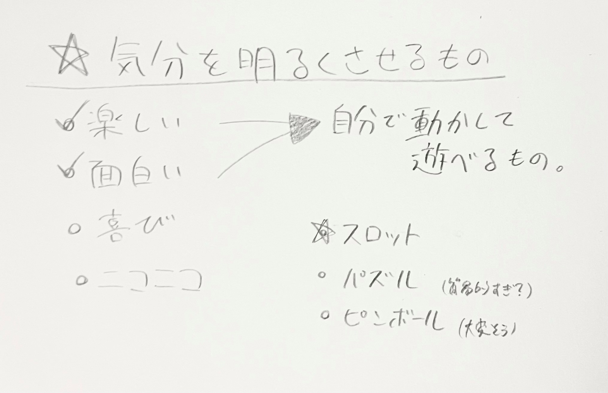
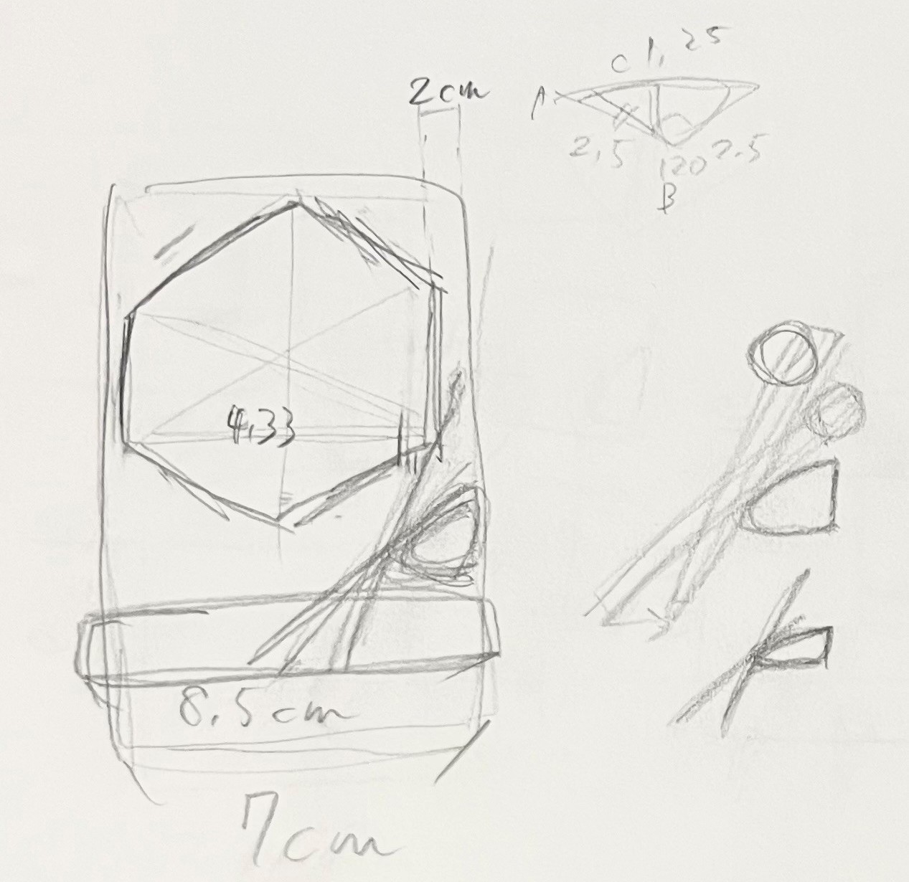
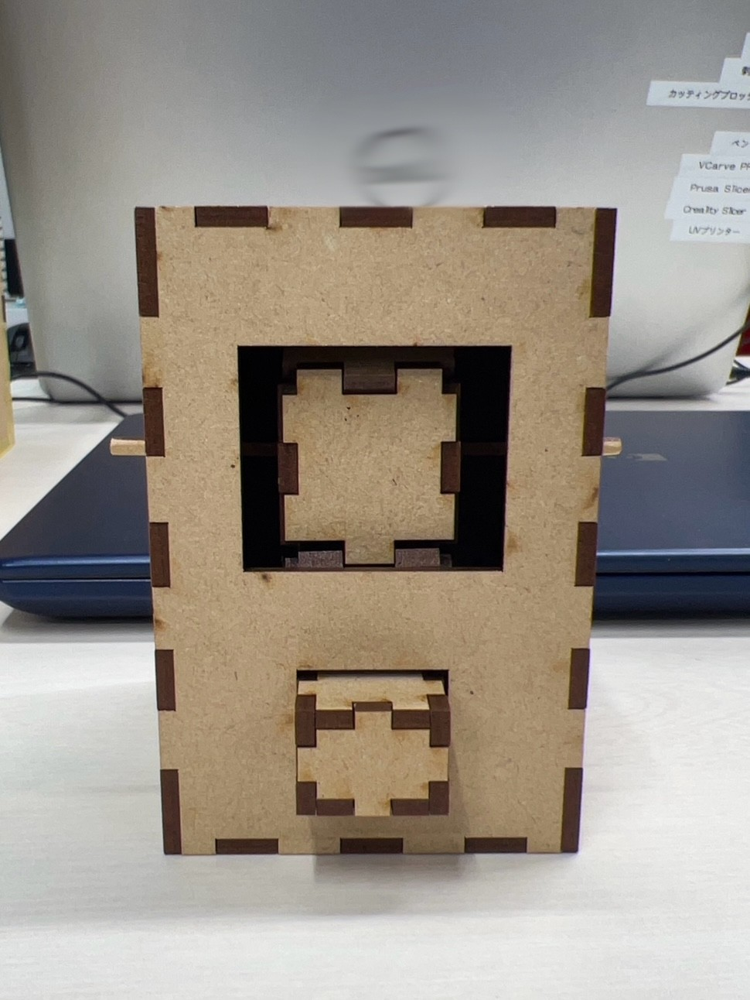
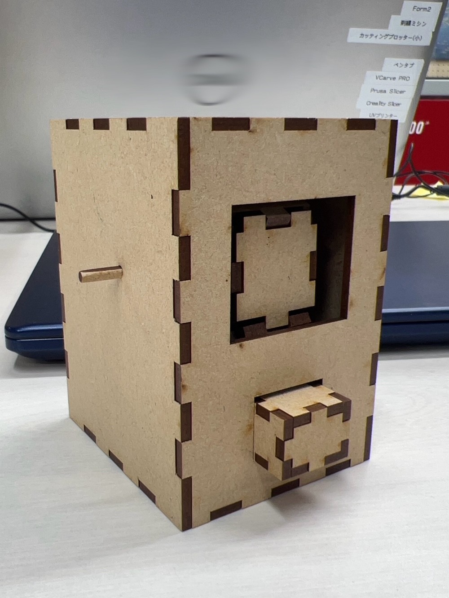
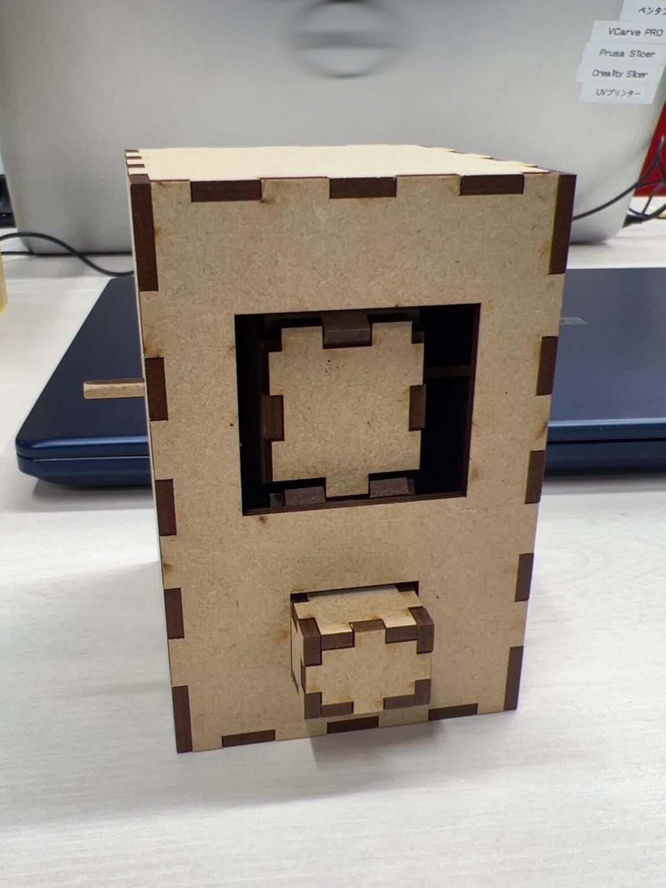

デジタルファブリケーション 第２回
スロット
《 ストーリーボード 》
レーザーカッティングで人の心を動かすものという課題だったため、人を明るくさせるものを作りたいと考えた。
何を作ろうかと迷っている際にギャンブル好きの推しがスロット配信をしているのを見て、スロットを作れたら面白いなと感じこの作品を作るに至った。
 
《 完成品 》
  
作成過程
← 修正（切り抜き抜けがあった部分とサイズ間違えの部分）
外側の長方形の箱と中の回る六角形の箱、押しボタンは
こちら
を参考にしました。 三つの箱のリンクと箱以外の部品を
感想
今回の課題である人の心を動かすという点においては満足のいくものを完成させることができた。
しかし、カッティング後に切り取るところの抜けを見つけたり、サイズを間違えていたりなど、すべきことを順序立ててまとめ、確認しながら進めたら起きないミスが多々あったため、それらには気を付けようと思った。